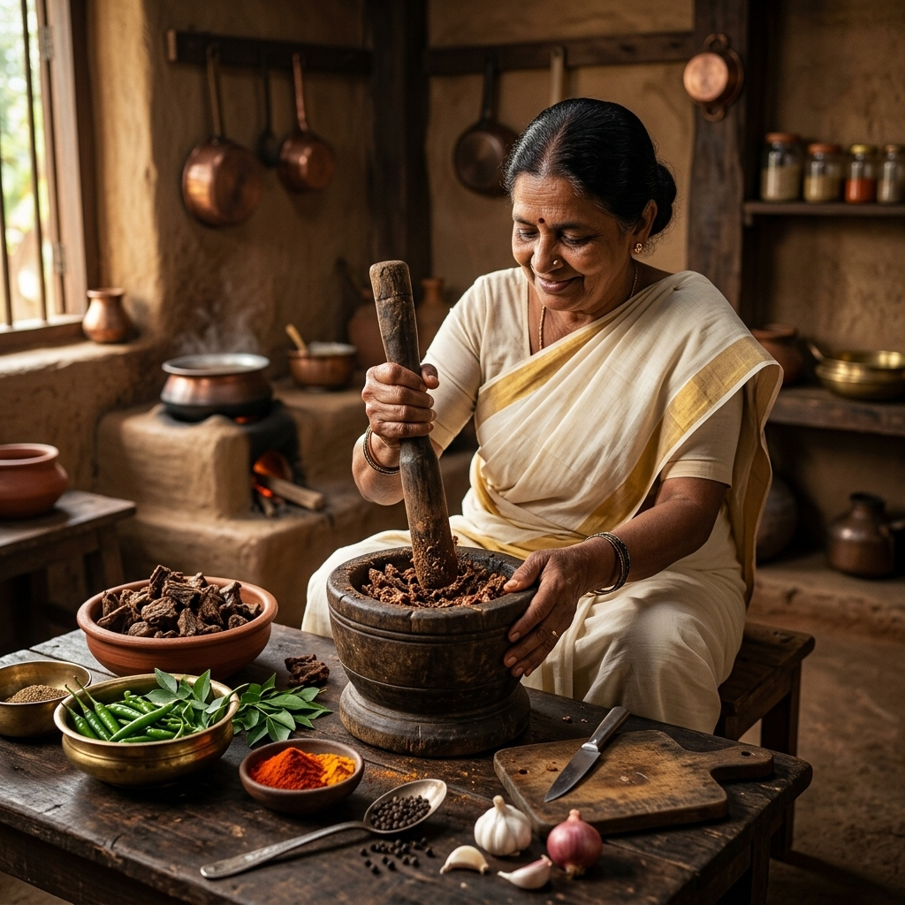

Made
The Artisanal Narrative
Where Memory
Becomes a Meal
"We do not sell tradition.
We preserve its soul."
Born in the misty highlands of Kottayam and the valleys of Pala, Ziryan Kulture is not a brand — it is a living inheritance. Every product carries within it the patience of a generation that understood the sacred relationship between fire, spice, and time.
Kottayam Suriyani Food Culture: Deeply rooted in the central districts of Kerala, the traditional Kottayam Suriyani (Syrian Christian) culinary tradition perfectly marries ancient Middle Eastern dietary customs with the region’s abundant tropical spices. Known for its mastery of meat preservation—especially the signature pan-dried, pulled beef—and complex, slow-roasted spice blends, this food culture celebrates communal feasts and meticulous handcrafted techniques passed down through generations.
Today, this culture is moving from home kitchens to global gourmet markets, as artisanal producers focus on preserving these heritage-based methods that define the authentic Suriyani taste.
Our techniques are not recipes. They are rituals — sun-drying under Kerala's golden afternoon light, pan-drying over wood-flame embers, spice blending by hand in the old way, where measurement is memory and precision is feeling.